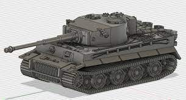
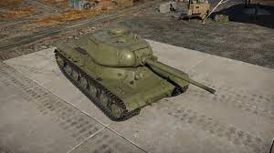
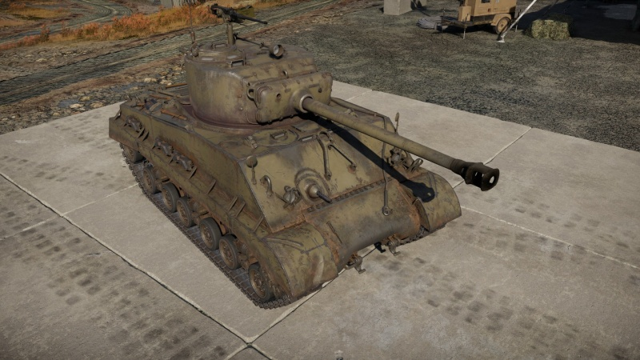

WWII Tanks!
Startside

Pros and cons: Tiger
Pros:
- Med rett retning er stridsvognen helt ugjennomtrengelig
- God Kannon + God Ammunisjon
- Ganske Rask
Cons:
- Uten retning kan stridsvognen sin rustning bli trengt igjennom
- Stor ammunisjons lagring på baksiden av the turret

Pros and cons: IS1
Pros:
- God Kannon
- Ganske Rask
- Rask Omladning
Cons:
- Veldig stor stridsvogn
- Dårlig Våpen gradning (Hvor langt ned du kan se)

Pros and cons: Abrams
Pros:
- Rask omladnings tid
- God Kannon + God Ammunisjon
- Ganske Rask
- En god 12,7mm maskingæver på toppen
Cons: